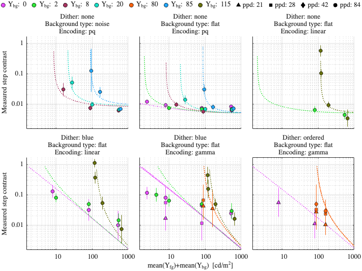
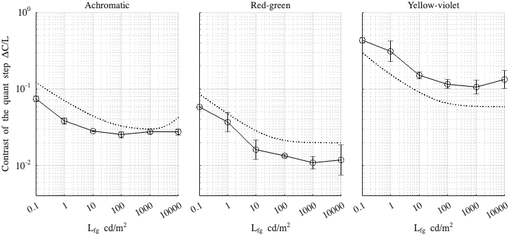

Fitting config: dither, model: daly_masking
Fitting error (RMSE): 2.25539
Model parameters
p.beta = 1.32678; p.beta_cc = 1; p.gs_num = [ 0.658033 0.2 0.965032 ]; p.noise_params = [ 0.45913 0.528451 0.557986 ]; p.dither_mask_params = [ 0.00284975 0.976634 0.894566 ]; p.blue_dither_params = [ 37.432 169.362 2.72605 2.71485 ];
Dataset: [ar2025]
Scaling factor: 0.343914

Dataset: [kim2020]
Scaling factor: 1.0522
